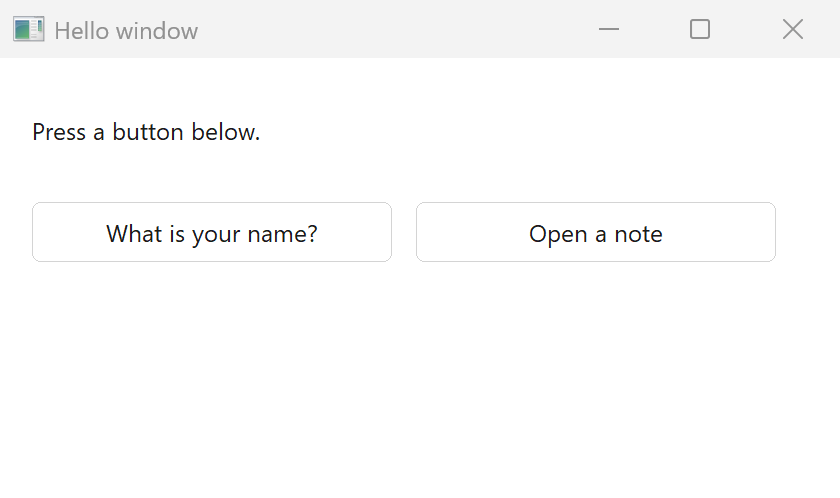

ฟอร์ม (Form)
ในกล่องเครื่องมือ: ฟอร์ม · เทียบกับ WinForms: Form
ฟอร์มคือหน้าต่างหนึ่งบาน โปรแกรมหนึ่งมีได้หลายฟอร์ม เช่น หน้าต่างหลัก กล่องถามชื่อ หน้าต่างตั้งค่า เราวาง control (ปุ่ม ช่องพิมพ์ ตาราง …) ลงบนฟอร์มด้วยการลากจากกล่องเครื่องมือ แล้วเขียนโค้ดว่าเมื่อเกิดอะไรขึ้นให้ทำอะไร

ฟอร์มหนึ่งมี 3 ไฟล์
| ไฟล์ | คืออะไร | แก้เองไหม |
|---|---|---|
main_window.phf | หน้าตาของฟอร์ม: ขนาด ชื่อ control ทุกตัวและตำแหน่ง - ตัวออกแบบแก้ไฟล์นี้ให้เวลาลากวาง | ลากวางในตัวออกแบบ (หรือแก้มือก็ได้) |
main_window_ui.rs | โค้ดที่ Phai Studio เขียนให้ทุกครั้งที่บันทึก: สร้างหน้าต่าง สร้าง control ต่อ event | ห้ามแก้ - บันทึกครั้งหน้าจะถูกเขียนทับ |
main_window.rs | โค้ดของเรา: ฟอร์มจำอะไรไว้ และเมื่อเกิด event แต่ละอย่างให้ทำอะไร | ใช่ - ไฟล์ของเรา |
เพิ่มฟอร์มใหม่ในโปรเจกต์: เมนู Project > Add Form... แล้วตั้งชื่อ (หรือ File > New > Form Ctrl+N) - Phai Studio สร้างให้ครบทั้ง 3 ไฟล์
โครงของโค้ด
โค้ดของฟอร์มคือ struct หนึ่งตัว (ฟอร์มจำอะไรไว้) กับ impl MainWindowEvents (เกิดอะไรขึ้นแล้วทำอะไร) และโปรแกรมเริ่มที่ main() ซึ่งเปิดหน้าต่างหลัก:
#![windows_subsystem = "windows"]
mod main_window;
mod main_window_ui;
mod name_form;
mod name_form_ui;
mod note_form;
mod note_form_ui;
fn main() {
// Open the main window; the program ends when it closes.
main_window_ui::MainWindowUi::run(main_window::MainWindow::default());
}#[derive(Default)]
pub struct MainWindow {
// What the program remembers while the window is open.
name: String,
}method ทุกตัวใน impl MainWindowEvents for MainWindow ได้ &mut self (ข้อมูลของฟอร์ม แก้ได้) กับ ui (ตัวหน้าต่างและ control ทุกตัว) - event ไหนไม่เขียน ก็ไม่ทำอะไร
ตัวอย่าง
1. ทำอะไรตอนหน้าต่างเปิด (Load)
method loaded ทำงานครั้งเดียวก่อนหน้าต่างแสดง - ที่ที่ดีที่สุดสำหรับใส่ค่าเริ่มต้น ดับเบิลคลิกที่พื้นฟอร์มในตัวออกแบบตอนที่โค้ดยังไม่มี method เลย Phai Studio จะเขียน loaded ให้ (ถ้ามีแล้วจะพาไปที่โค้ด):
fn loaded(&mut self, ui: &MainWindowUi) {
// Runs once, just before the window shows.
ui.set_title("Hello window");
ui.greeting.set_text("Press a button below.");
}2. เปิดหน้าต่างอีกบาน (Show)
สร้างฟอร์ม NoteForm ไว้ก่อน แล้วในปุ่มของหน้าต่างหลัก เรียก NoteFormUi::show - หน้าต่างใหม่เปิดข้าง ๆ และหน้าต่างหลักใช้ต่อได้ทันที:
fn open_note_clicked(&mut self, ui: &MainWindowUi) {
// Open NoteForm beside this window; this one carries on at once.
NoteFormUi::show(ui.hwnd, NoteForm);
}3. เปิดกล่องถาม แล้วอ่านคำตอบ (ShowDialog)
ฟอร์ม NameForm มีช่องพิมพ์ answer ปุ่ม ok (DialogResult = Ok) และ cancel (DialogResult = Cancel) ฟอร์มตั้ง AcceptButton = ok และ CancelButton = cancel ไว้ จึงกด Enter / Esc ได้ด้วย:
# Phai Studio form - docs/phaiform.md
format = 1
[form]
name = "NameForm"
title = "Your name"
size = [320, 120]
start = "center"
accept_button = "ok"
border = "fixed_dialog"
cancel_button = "cancel"
maximize_box = false
minimize_box = false
[form.events]
closed = "closed"
[[control]]
kind = "label"
id = "prompt"
text = "Type your name:"
bounds = [12, 12, 296, 20]
[[control]]
kind = "edit"
id = "answer"
bounds = [12, 36, 296, 23]
[[control]]
kind = "button"
id = "ok"
text = "OK"
bounds = [152, 80, 75, 26]
class = "primary"
dialog_result = "ok"
[[control]]
kind = "button"
id = "cancel"
text = "Cancel"
bounds = [233, 80, 75, 26]
dialog_result = "cancel"ตอนหน้าต่างปิด (event FormClosed) เก็บสิ่งที่พิมพ์ไว้ใน struct:
#[derive(Default)]
pub struct NameForm {
/// What was typed, read when the window has closed.
pub name: String,
}
impl NameFormEvents for NameForm {
fn closed(&mut self, ui: &NameFormUi) {
// Keep the text before the window is gone.
self.name = ui.answer.text();
}
}หน้าต่างหลักเปิดมันด้วย show_dialog_for ซึ่งรอจนปิด แล้วคืนทั้งปุ่มที่กดและ struct ของ NameForm:
fn ask_name_clicked(&mut self, ui: &MainWindowUi) {
// Open NameForm over this window and wait until it closes.
let (answer, form) = NameFormUi::show_dialog_for(ui.hwnd, NameForm::default());
if let (DialogResult::Ok, Some(form)) = (answer, form) {
self.name = form.name;
ui.greeting.set_text(&format!("Hello, {}!", self.name));
}
}4. ถามก่อนปิด (FormClosing)
ใน Properties เลือกแท็บ Events ของฟอร์ม แล้วดับเบิลคลิก FormClosing - ได้ e มาด้วย เรียก e.cancel() แล้วหน้าต่างจะไม่ปิด:
fn main_window_closing(&mut self, ui: &MainWindowUi, e: &ClosingEventArgs) {
let sure = message_box(ui.hwnd, "Close the program?", "Hello window", MessageBoxButtons::YesNo, MessageBoxIcon::Question);
if sure != DialogResult::Yes {
e.cancel(); // the window stays open
}
}5. ปุ่มลัดบนแป้นพิมพ์ (KeyDown + KeyPreview)
ตั้ง KeyPreview = True ให้ฟอร์มได้ยินแป้นก่อน control ข้างใน แล้วเขียน KeyDown - ตัวอย่างนี้กด F11 เพื่อเต็มจอ:
fn main_window_key_down(&mut self, ui: &MainWindowUi, e: &KeyEventArgs) {
// F11 (key 0x7A): full screen and back. KeyPreview lets the window hear it first.
if e.key == 0x7A {
let on = !phai_ui::form::is_full_screen(ui.hwnd);
phai_ui::form::set_full_screen(ui.hwnd, on);
}
}รหัสแป้น: 0x0D Enter · 0x1B Esc · 0x70–0x7B F1–F12 · 0x41–0x5A A–Z · ดู e.ctrl, e.shift, e.alt ว่ากดค้างไว้ไหม
Method: สร้างและเปิดหน้าต่าง
Xxx คือชื่อฟอร์ม เช่น MainWindowUi::run, NameFormUi::show_dialog · events คือ struct ของฟอร์มนั้น เช่น NameForm::default() · owner คือหน้าต่างที่เปิดมัน (ui.hwnd)
| Method | ทำอะไร |
|---|---|
XxxUi::run(events) | สร้างหน้าต่างแล้วทำงานจนกว่าจะปิด ใช้กับหน้าต่างหลักใน main() เมื่อปิดแล้วโปรแกรมจบ - เหมือน Application.Run(new Form1()) |
XxxUi::show(owner, events) | เปิดหน้าต่างข้าง ๆ หน้าต่าง owner แล้วทำงานต่อทันที ไม่รอ - เหมือน Show() |
XxxUi::show_dialog(owner, events) | เปิดหน้าต่างทับ owner แล้วรอจนปิด ระหว่างนั้นกด owner ไม่ได้ ได้คำตอบเป็น DialogResult ของปุ่มที่กดปิด - เหมือน ShowDialog() |
XxxUi::show_dialog_for(owner, events) | เหมือน show_dialog แต่คืน struct ของหน้าต่างให้ด้วย เพื่ออ่านสิ่งที่ผู้ใช้กรอก: ได้ (DialogResult, Option<Xxx>) |
XxxUi::show_mdi_child(parent, events) | เปิดหน้าต่างไว้ข้างในหน้าต่าง parent ที่ตั้ง IsMdiContainer ไว้ - เหมือน MdiParent + Show() |
XxxUi::create(events) | สร้างและแสดงหน้าต่าง แต่ให้โปรแกรมวนรับข้อความเอง (ใช้น้อย) |
Method: ใช้กับหน้าต่างที่เปิดอยู่
| Method | ทำอะไร |
|---|---|
ui.close() | ปิดหน้าต่าง เหมือนกดปุ่ม ✕ - event FormClosing เกิดก่อน จึงยังยกเลิกได้ |
ui.hide() | ซ่อนหน้าต่าง (ยังทำงานอยู่) |
ui.show_window() | แสดงหน้าต่างที่ซ่อนไว้อีกครั้ง |
ui.activate() | ดึงหน้าต่างขึ้นมาข้างหน้า ให้รับแป้นพิมพ์ |
ui.center_to_screen() | ย้ายไปกลางจอ |
ui.title() | อ่านข้อความบนแถบชื่อ ได้ String |
ui.set_title("…") | เปลี่ยนข้อความบนแถบชื่อ |
ui.hwnd | ตัวหน้าต่างเอง (HWND) ใช้ส่งให้ message_box, show, show_dialog เป็น owner |
ui.ชื่อcontrol | control ทุกตัวบนฟอร์ม เรียกตาม Id ที่ตั้งไว้ เช่น ui.greeting.set_text("…") |
XxxUi::begin_invoke(inv, f) | จากเธรดอื่น: สั่งให้ f ทำงานบนหน้าต่างนี้ทีหลัง ไม่รอ (ได้ inv จาก ui.invoker()) - เหมือน BeginInvoke |
XxxUi::invoke(inv, f) | เหมือนข้างบน แต่รอจน f ทำเสร็จ - เหมือน Invoke |
ui.relabel() | เปลี่ยนข้อความทุกตัวเป็นภาษาที่เลือกใหม่ หลัง phai_ui::text::set_thai(…) |
เครื่องมือเพิ่มเติมใน phai_ui::form
| Method | ทำอะไร |
|---|---|
message_box(owner, text, caption, buttons, icon) | กล่องข้อความ ได้ DialogResult ของปุ่มที่กด - เหมือน MessageBox.Show ปุ่ม: Ok, OkCancel, YesNo, YesNoCancel … ไอคอน: Information, Warning, Error, Question |
close_with(hwnd, DialogResult::Ok) | ปิดหน้าต่างพร้อมตั้งคำตอบเอง (ปุ่มที่ตั้ง DialogResult ไว้ทำให้อัตโนมัติ) |
set_full_screen(hwnd, true) | เต็มจอ ไม่มีกรอบและแถบเมนู - false กลับเหมือนเดิม |
is_full_screen(hwnd) | ตอนนี้เต็มจออยู่ไหม |
set_opacity(hwnd, 80) | ความทึบเป็นเปอร์เซ็นต์ น้อยกว่า 100 จะเห็นสิ่งที่อยู่ข้างหลัง |
set_icon(hwnd, bytes) | เปลี่ยนไอคอนหน้าต่างจากไฟล์ .ico |
Properties
ตั้งได้ในหน้าต่าง Properties ตอนไม่ได้เลือก control ตัวไหน (คลิกพื้นฟอร์ม) - ตารางนี้สร้างจาก Phai Studio เอง จึงตรงกับที่เห็นในโปรแกรมเสมอ
| Property | ค่าเริ่มต้น | ทำอะไร |
|---|---|---|
| ออกแบบ | ||
| ชื่อ | MainWindow | ชื่อหน้าต่างในโค้ด: ชื่อ struct และชื่อไฟล์ |
| UserControl | False | ไม่ใช่หน้าต่าง แต่เป็น control ที่ฟอร์มอื่นในโปรเจกต์วางได้ (kind usercontrol) |
| รูปลักษณ์ | ||
| หัวเรื่อง | MainWindow | ข้อความบนแถบชื่อ - คีย์ภาษาอังกฤษ โปรแกรมแปลให้ |
| ขนาดฟอนต์ | - | ขนาดตัวอักษร (พอยต์) ของทุก control ว่างไว้คือ 9 ของ Windows |
| ธีม | - | ไฟล์ CSS ที่ทุก control ใช้สี |
| FormBorderStyle | sizable | Sizable: ลากขอบย่อขยายได้, Fixed: ลากไม่ได้, Dialog: กรอบแบบกล่องโต้ตอบ, Tool: แถบชื่อเล็ก, None: ไม่มีกรอบเลย |
| BackColor | - | สีพื้นหลังของหน้าต่างนี้ทับธีม control ข้างในวางบนสีนี้ |
| ForeColor | - | สีตัวอักษรของหน้าต่างนี้ทับธีม |
| BackgroundImage | - | ไฟล์รูปในโปรเจกต์ ใช้เป็นพื้นหลังใต้ control ของหน้าต่าง |
| BackgroundImageLayout | tile | Tile: ปูซ้ำ, None: ขนาดจริงมุมซ้ายบน, Center: อยู่กลาง, Stretch: ยืดเต็มหน้าต่าง, Zoom: ขยายเต็มที่โดยคงสัดส่วน |
| การจัดวาง | ||
| ขนาด | 480, 320 | ขนาดด้านในหน้าต่าง ที่สเกล 100% |
| กว้าง | 480 | ขนาดด้านในหน้าต่าง ที่สเกล 100% |
| สูง | 320 | ขนาดด้านในหน้าต่าง ที่สเกล 100% |
| ตำแหน่งเริ่มต้น | กลางจอ | หน้าต่างขึ้นที่ไหนตอนเปิด: กลางจอ หรือตามที่ Windows วางให้ |
| สถานะหน้าต่าง | ปกติ | เต็มจอ: หน้าต่างเปิดขึ้นมาเต็มจอ |
| PhoneLayout | stack | บนจอที่แคบกว่าฟอร์ม (มือถือ บนเว็บ): stack เรียง control ลงมาทีละตัว กว้างเต็มจอ ตามลำดับการอ่าน ขนาดพอให้นิ้วกด; zoom ย่อทั้งฟอร์มให้พอดีจอ |
| MinimumSize | - | ขนาดภายในที่เล็กที่สุดที่ลากย่อได้ ที่สเกล 100% |
| MaximumSize | - | ขนาดภายในที่ใหญ่ที่สุดที่ลากขยายได้ ที่สเกล 100% |
| AutoScroll | False | เมื่อหน้าต่างเล็กกว่าที่ออกแบบ จะมีแถบเลื่อนและ control เลื่อนตาม |
| Padding | 0 | ระยะว่างรอบขอบหน้าต่าง (พิกเซล) สำหรับ control ที่ dock |
| อื่น ๆ | ||
| AcceptButton | - | ปุ่มที่ถูกกดเมื่อกด Enter ไม่ว่าโฟกัสอยู่ที่ไหน |
| CancelButton | - | ปุ่มที่ถูกกดเมื่อกด Esc |
| KeyPreview | False | KeyDown, KeyUp และ KeyPress ของหน้าต่างได้รับแป้นที่กดใน control ก่อนตัว control |
| รูปแบบหน้าต่าง | ||
| MaximizeBox | True | ปุ่มขยายเต็มจอบนแถบชื่อ |
| MinimizeBox | True | ปุ่มย่อหน้าต่างบนแถบชื่อ |
| ControlBox | True | ปุ่มและเมนูบนแถบชื่อ ถ้าปิดจะไม่มีทั้งหมด |
| IsMdiContainer | False | ฟอร์มอื่นเปิดข้างในได้ (show_mdi_child) เรียงซ้อนหรือเรียงต่อกัน |
| TopMost | False | อยู่เหนือหน้าต่างอื่นทุกหน้าต่างเสมอ |
| ShowInTaskbar | True | มีปุ่มบนแถบงาน (taskbar) |
| StartHidden | False | สร้างหน้าต่างและเรียก Loaded แต่ไม่แสดง - สำหรับโปรแกรมที่อยู่ในไอคอนมุมจอ (NotifyIcon); ui.show_window() เรียกขึ้นมาแสดง |
| Opacity | 100 | ความทึบเป็นเปอร์เซ็นต์ ยิ่งน้อยยิ่งเห็นสิ่งที่อยู่ข้างหลัง |
| Icon | - | ไฟล์ .ico ในโปรเจกต์ สำหรับแถบชื่อและปุ่มบนแถบงาน |
| พฤติกรรม | ||
| AllowDrop | False | ลากไฟล์จาก Explorer มาวางบนหน้าต่างได้ - ใช้ event DragDrop |
Events
ดับเบิลคลิกชื่อ event ในแท็บ Events ของ Properties แล้ว Phai Studio จะเขียน method ให้ (ชื่อ = ชื่อฟอร์ม + ชื่อ event เช่น main_window_closing) - ชี้เมาส์ที่ชนิดของ e เพื่อดูชื่อเต็ม
| Event | ทำอะไร | method ที่เขียน |
|---|---|---|
| Load | ทำงานครั้งเดียวเมื่อสร้างหน้าต่าง ก่อนแสดง | fn loaded(&mut self, ui: &MainWindowUi) |
| Shown | หน้าต่างขึ้นบนจอเป็นครั้งแรก | fn main_window_shown(&mut self, ui: &MainWindowUi) |
| FormClosing | หน้าต่างกำลังจะปิด - เรียก e.cancel() เพื่อไม่ให้ปิด | fn main_window_closing(&mut self, ui: &MainWindowUi, e: &ClosingEventArgs) |
| FormClosed | หน้าต่างปิดแล้ว | fn main_window_closed(&mut self, ui: &MainWindowUi) |
| Resize | ขนาดหน้าต่างเปลี่ยน | fn main_window_resize(&mut self, ui: &MainWindowUi) |
| Activated | หน้าต่างขึ้นมาอยู่หน้าสุดและรับแป้นพิมพ์ | fn main_window_activated(&mut self, ui: &MainWindowUi) |
| Deactivate | หน้าต่างอื่นขึ้นมาอยู่หน้า | fn main_window_deactivate(&mut self, ui: &MainWindowUi) |
| Click | คลิกที่ตัวหน้าต่าง ไม่ใช่ control ข้างใน | fn main_window_click(&mut self, ui: &MainWindowUi) |
| DoubleClick | ดับเบิลคลิกที่ตัวหน้าต่าง | fn main_window_double_click(&mut self, ui: &MainWindowUi) |
| MouseDown | กดปุ่มเมาส์บนตัวหน้าต่าง | fn main_window_mouse_down(&mut self, ui: &MainWindowUi, e: &MouseEventArgs) |
| MouseUp | ปล่อยปุ่มเมาส์บนตัวหน้าต่าง | fn main_window_mouse_up(&mut self, ui: &MainWindowUi, e: &MouseEventArgs) |
| MouseMove | เมาส์เคลื่อนบนตัวหน้าต่าง | fn main_window_mouse_move(&mut self, ui: &MainWindowUi, e: &MouseEventArgs) |
| DragDrop | มีไฟล์ถูกลากจาก Explorer มาวางบนหน้าต่าง - e.files | fn main_window_drag_drop(&mut self, ui: &MainWindowUi, e: &FileDropEventArgs) |
| KeyDown | กดแป้นที่ใดก็ได้ในหน้าต่างเมื่อเปิด KeyPreview - ก่อน control ได้รับ; e.set_handled() เพื่อไม่ให้ control ได้รับ | fn main_window_key_down(&mut self, ui: &MainWindowUi, e: &KeyEventArgs) |
| KeyUp | ปล่อยแป้นที่ใดก็ได้ในหน้าต่างเมื่อเปิด KeyPreview | fn main_window_key_up(&mut self, ui: &MainWindowUi, e: &KeyEventArgs) |
| KeyPress | พิมพ์ตัวอักษรที่ใดก็ได้ในหน้าต่างเมื่อเปิด KeyPreview | fn main_window_key_press(&mut self, ui: &MainWindowUi, e: &KeyPressEventArgs) |
| MenuStart | เริ่มใช้แถบเมนู: เปิดเมนูจากแถบ หรือกด Alt | fn main_window_menu_start(&mut self, ui: &MainWindowUi) |
| MenuComplete | เลิกใช้แถบเมนูแล้ว | fn main_window_menu_complete(&mut self, ui: &MainWindowUi) |
| ItemClicked | คลิกปุ่มบนแถบเครื่องมือ - e.index คือลำดับของปุ่มเริ่มจาก 0 (นับเส้นคั่นด้วย) | fn main_window_toolbar_item_clicked(&mut self, ui: &MainWindowUi, e: &ItemEventArgs) |
ลองทำเอง
- เปลี่ยน
loadedให้แถบชื่อแสดงชื่อของเราเอง - เพิ่มปุ่ม "ออก" ที่เรียก
ui.close()- แล้วดูว่ากล่องถามก่อนปิดยังขึ้นไหม - ใน NameForm ถ้าไม่ได้พิมพ์อะไรเลยแล้วกด OK ให้ขึ้น
message_boxเตือน (ใช้ event FormClosing ของ NameForm) - ตั้ง Opacity ของ NoteForm เป็น 85 แล้วดูว่าเห็นอะไรอยู่ข้างหลัง
โค้ดทั้งหมดในหน้านี้อยู่ในโปรเจกต์ docs/help-src/examples/form ของ Phai Studio - เปิดด้วย Phai Studio แล้วกด F5 ได้เลย